在交界面附近, N型半导体中的电子与P型半导体中的空穴发生复合. 产生 的内建电场.
产生内建电场的区域, 称为阻挡层.
内建电场产生漂移电流, 它与由于浓度差产生的扩散电流相抵消.
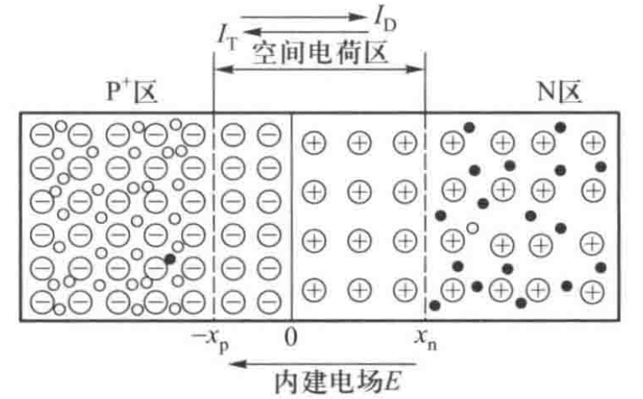
内建电场产生的电位差: .
阻挡层宽度:
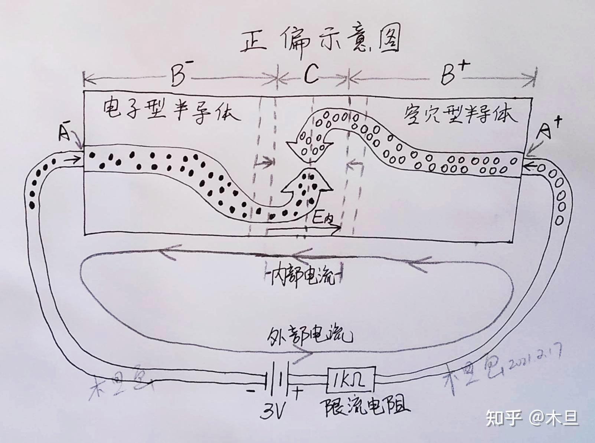
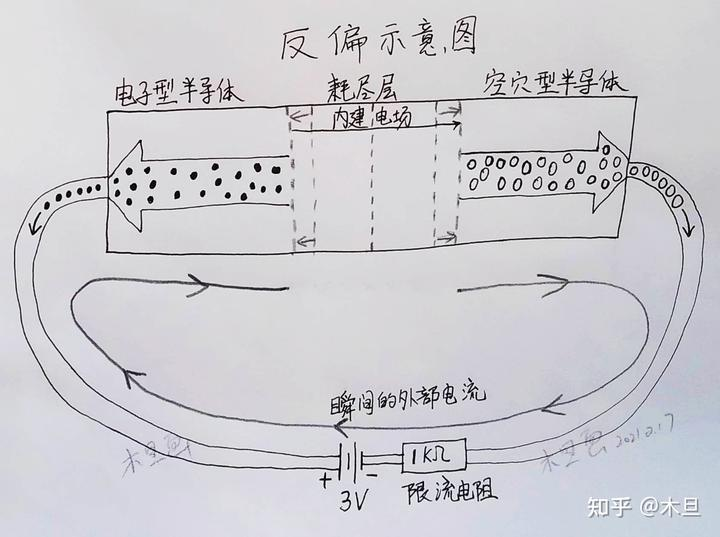
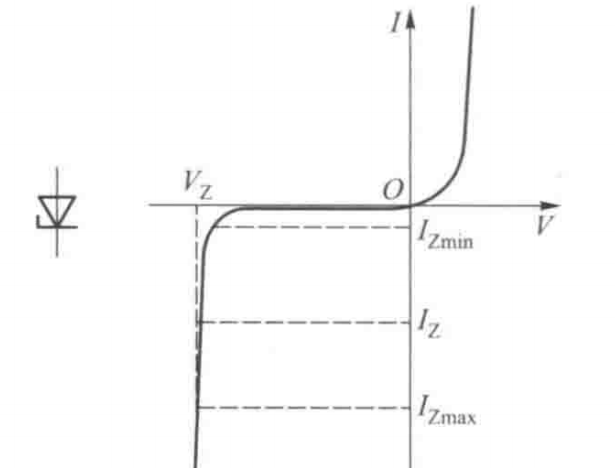
随温度升高, 少子增加, 增加.
随温度升高, 增加, 但增加速度不如 快. 故净效果是同等电压下电流增加.
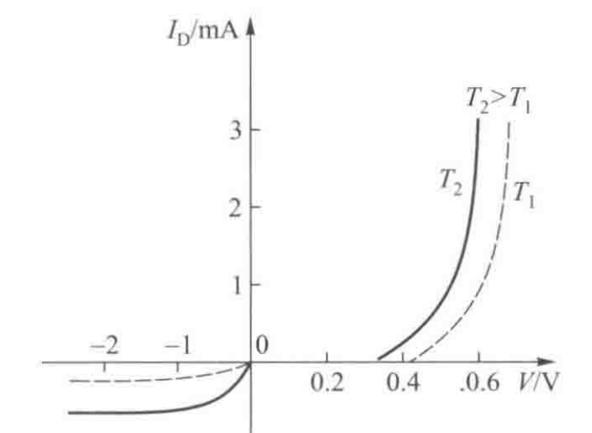
随温度升高, 电子随机热骚动增加, 雪崩击穿电压增大.
随温度升高, 共价键能量增高, 齐纳击穿电压减小.
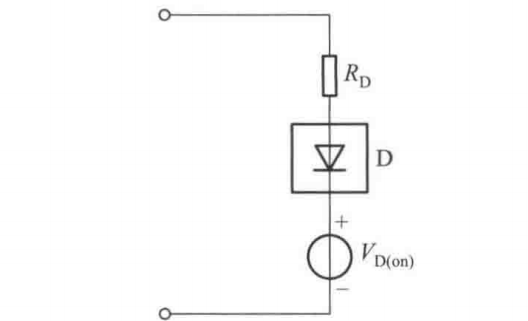
一般用于幅值很小的交流输入.
利用切线斜率来表示电阻. .
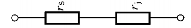
若遇到直流+交流的输入, 分别用两种模型分析, 随后叠加即可. (对于以后的所有电路, 都可如此分析)
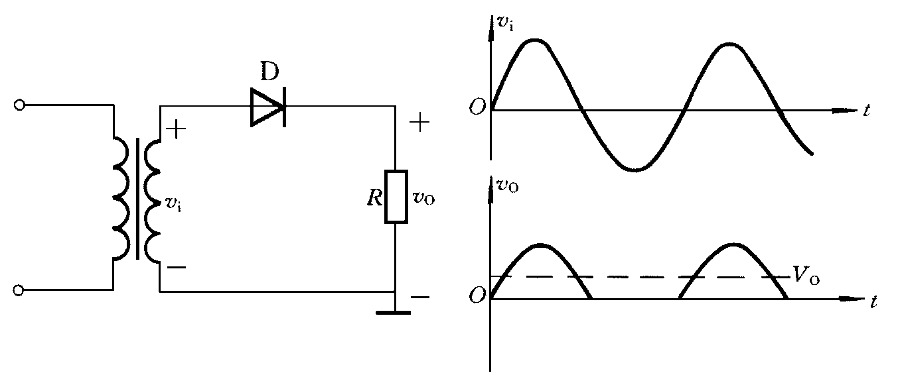
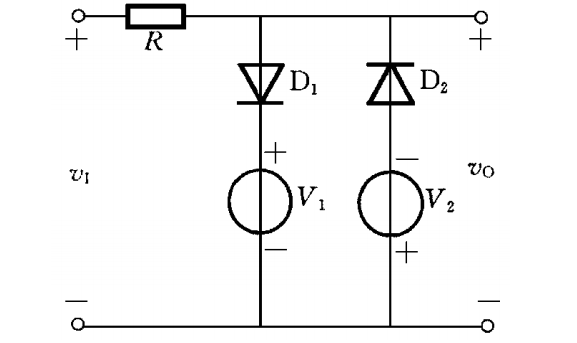
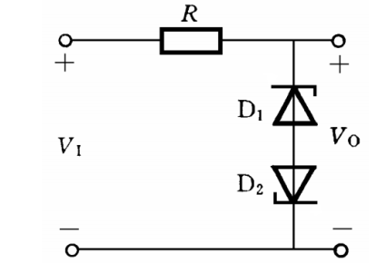
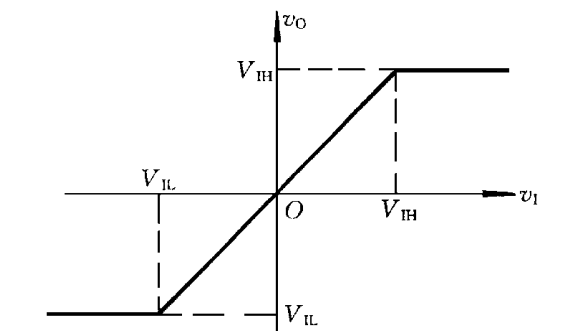
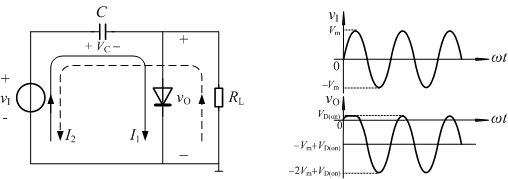
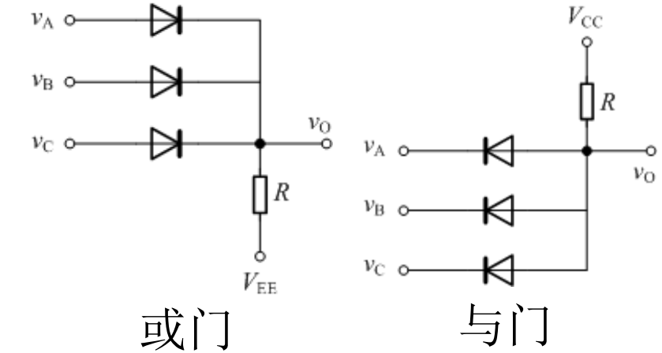
下一章: 晶体三极管